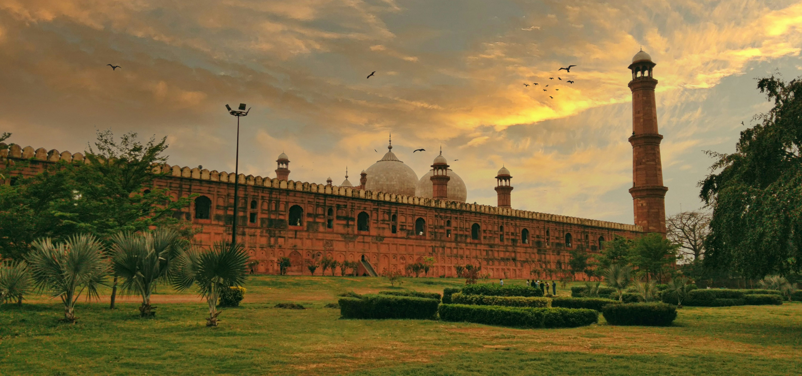
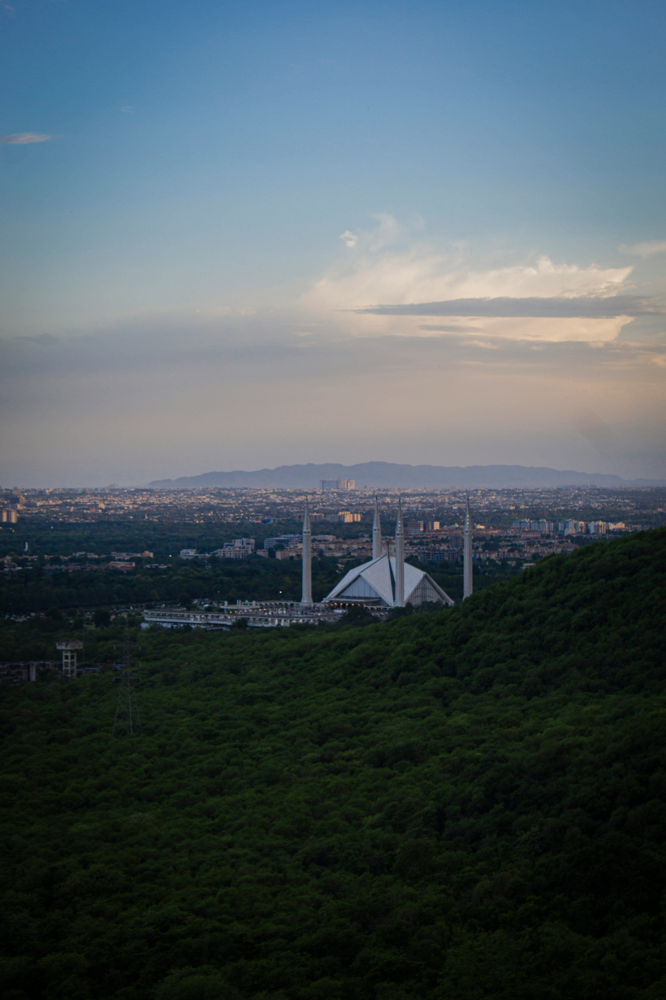
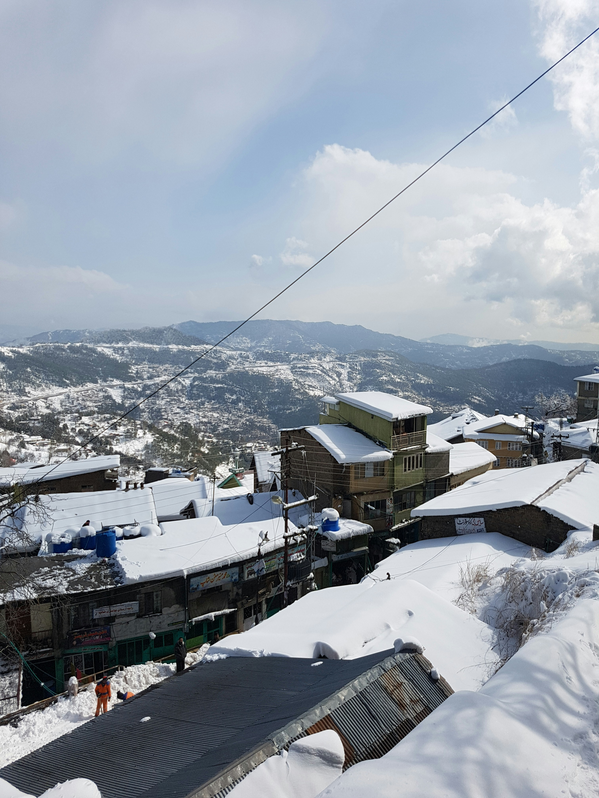

Popular Destinations in Pakistan
Pakistan is full of stunning landscapes, historic places, and unforgettable travel experiences. From snowy mountains to peaceful valleys and busy cities, there is something for every traveler.
Hunza Valley
Hunza is famous for its breathtaking mountains, clear lakes, and warm hospitality. Visitors enjoy the peaceful valleys, colorful villages, and the famous views of Rakaposhi and Ultar Sar.

- Speciality: Stunning views of Rakaposhi and Ultar Sar
- Great for peaceful village visits and local hospitality
- Best time to visit: April to October
Skardu
Skardu is known for its breathtaking lakes, glaciers, and adventure opportunities. It is a dream destination for trekkers, campers, and travelers who want to explore the beauty of Deosai and Shangrila.

- Speciality: Beautiful lakes, glaciers, and adventure trails
- Perfect for trekking, camping, and exploring Deosai
- Best time to visit: May to September
Lahore
Lahore is rich in history, food, and culture. It offers a lively atmosphere with majestic forts, beautiful gardens, busy markets, and some of the best street food in the country.

- Speciality: Rich history, Mughal heritage, and vibrant street life
- Great for exploring forts, gardens, and famous food streets
- Best time to visit: October to March
Islamabad
Islamabad is the modern capital of Pakistan, known for its clean roads, beautiful parks, and peaceful atmosphere. It is a great place for families, tourists, and anyone looking for a calm and scenic city break.

- Speciality: A peaceful capital city with modern architecture
- Ideal for parks, museums, and a relaxed city break
- Best time to visit: March to November
Murree
Murree is a cool hill station famous for its pine forests, misty weather, and scenic viewpoints. It is a favorite getaway for families and tourists who want to enjoy fresh air and a peaceful holiday.

- Speciality: Cool weather, pine forests, and misty viewpoints
- Perfect for a family getaway and short hill trips
- Best time to visit: May to September